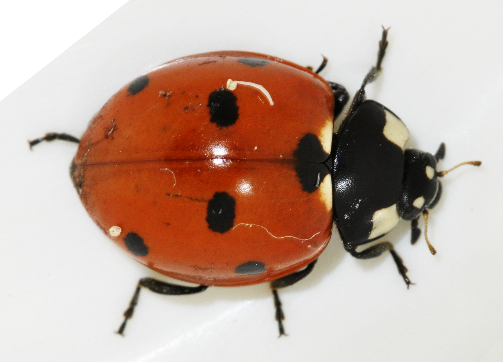
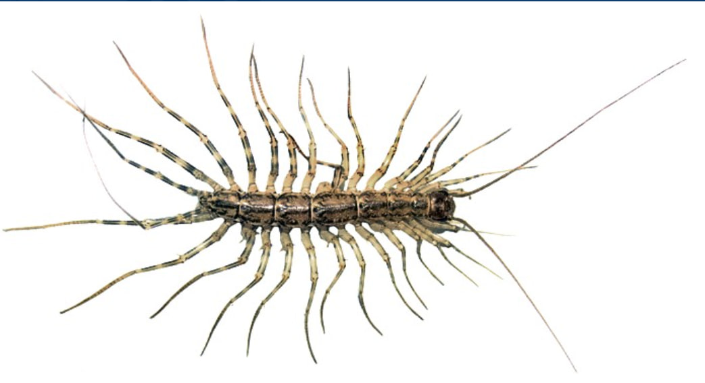
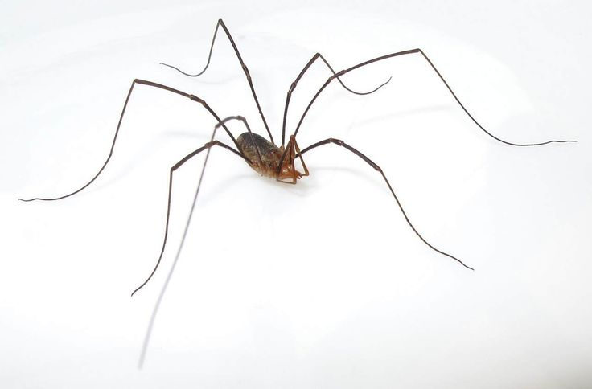
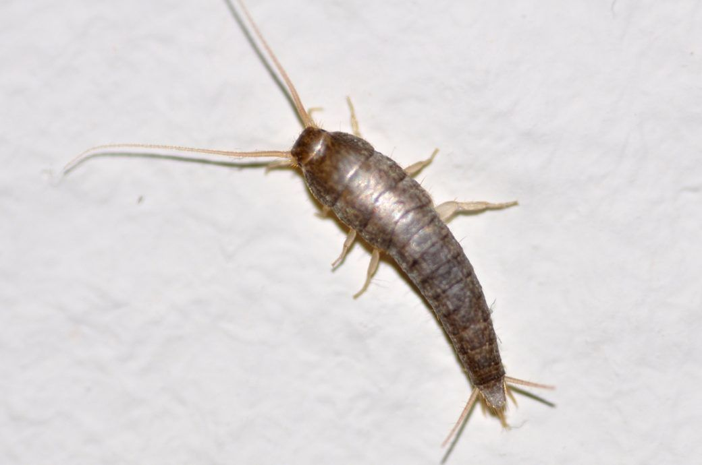
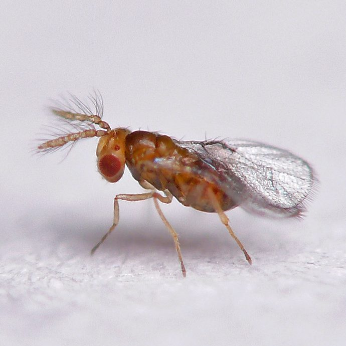

Полезные "домашние" насекомые и другие существа
Вот список полезных насекомых, которые могут встречаться в доме и приносить определённую пользу:
божьи коровки
Божьи коровки поедают тлю и других мелких вредителей. Живут в доме редко, чаще на окнах, на балконах.
домовой паук
Ловит и поедает летающих и ползающих вредителей. Живет в углах помещений, на чердаках, под мебелью.

мухоловка
Уничтожает мух, комаров, тараканов, моль и пауков. Может жить в ванной, на кухне, в подвалах.
сенокосцы
Мелкие паучки с длинными тонкими лапками, ловят мошек и моль. Живут в углах помещений под потолком.
серебрянка
Другое название чешуйница. Поедает огранические остатки и помогает "уборке". Живет во влажных местах.
трихограмма
Осы-трихограммы паразитируют на яйцах вредителей (например, моли). Могут жить шкафах, кладовых (если завести специально)
